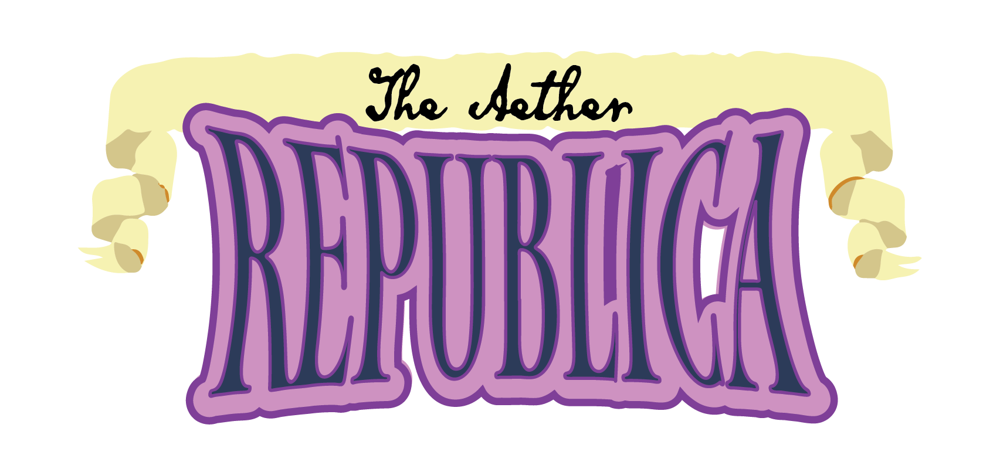

Aether Republica is a table top role playing powered by the fate system based around an alternate history set in the phillipenes in the 1800s
Aether Republica as a non video form of entertainment posed several Unique challenges. Namely the restriction in using the Fate Accelerated system posed the challenge of creating unique and memorable gameplay while still maintaining within the bounds of the Fate Sytem. Eventually a balance was set where the Aether magic system would simply provide the player with Additional unique stunts based on the players background and Academy degree that they may choose from while any monsters would gain unique gameplay aspects to make them memorable to the player. Furthermore, due to the leathality of Aether a unique design challenge arrose on how to use the Fate System to demonstrate this unique form of stress. In order to solve this design issue the Fate Core System was turned to, in particular the mental stress system.
Other Key aspects that served as a valuable learning opportunity was the creation of various NPCs both major and minor. These characters served as the basis for the TTRPG as a major focus point was the Political instability and the various quests and opportunities that could arrise from that instability.
If the opportunity Arrose to complete this project, a greater focus on consumables would be placed as it became aparent through playtesting with players that the tinkerer class could become very overpowered if able to craft permanent weapons and armour; however without a range of consumables to choose from, the class was forced to be artifically limited in a way that overtly limited player agency.
you can download the Aether Republica Book at: AetherRepublicaBook